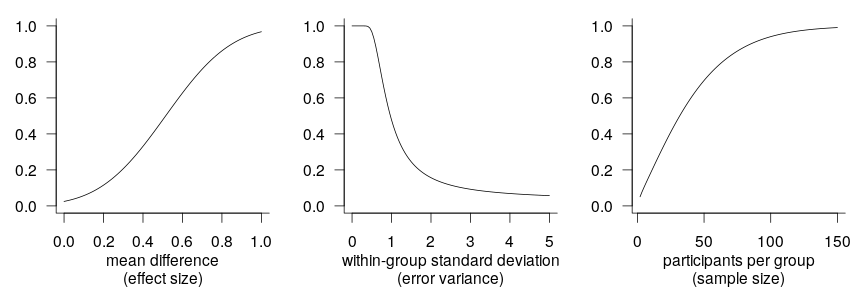
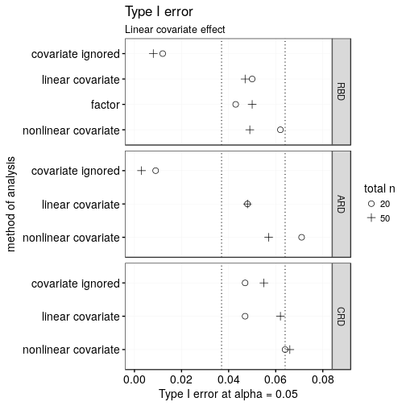
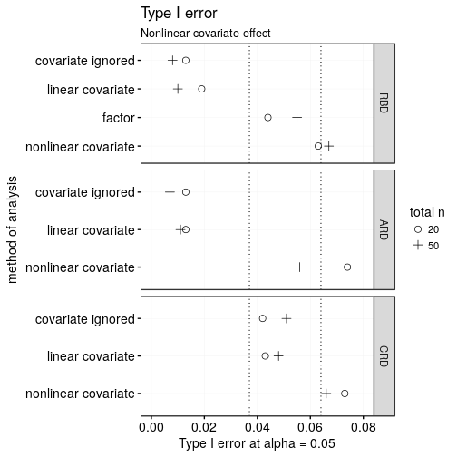
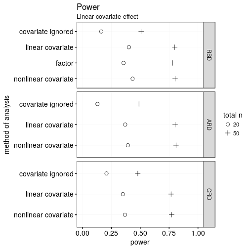
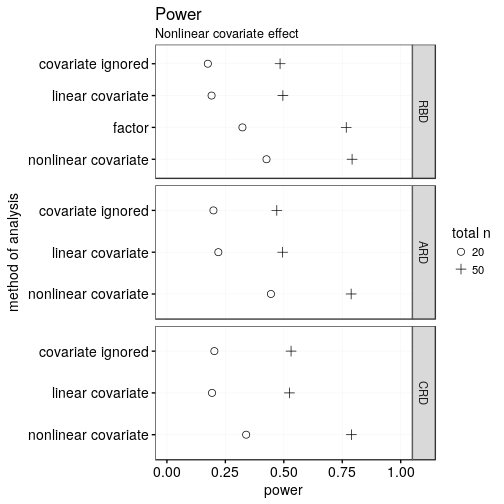
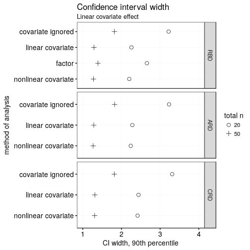
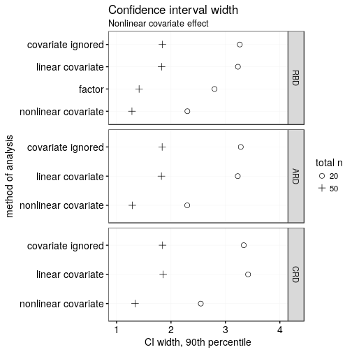

Increasing power and precision using covariates
A recurring theme in the writings of methodologists over the last years and indeed decades is that researchers need to increase the statistical power (and precision) of the studies they conduct. These writers have rightly stressed the necessity of larger sample sizes, but other research design characteristics that affect power and precision have received comparatively little attention. In this blog post, I discuss and demonstrate how by capitalising on information that they collect anyway, researchers can achieve more power and precision without running more participants.
tl;dr
Consider whether one or a handful of variables other than the ones you’re really interested in may account for differences in the outcome between participants, and actually use them in the analysis rather than just report them in a “background variables” table.
Statistical power and precision
First, let’s discuss what statistical power and precision mean. Statistical power is a concept rooted in the paradigm of null hypothesis testing and refers to the probability with which a study will find a significant pattern in the data if such a pattern is indeed present in the ‘mechanism’ that generated the data. For instance, a new teaching method may really be better than the old one, but due to variability in the data, there’s always some probability that an evaluation study would not find a significant difference between the learning outcomes of pupils taught with the new vs. the old method. The smaller the probability of this happening, the greater the statistical power of the study.
As the example demonstrates, the immediate effect of low statistical power is that, pretty much by definition, actually existing patterns in the data may fly under the researchers’ radar. Less obviously, but not any less seriously, underpowered studies coupled with publication bias – i.e., the tendency for authors to submit and for reviewers to recommended significant findings for publication – can dramatically distort the literature on any given phenomenon. Specifically, a literature comprised largely of significant findings stemming from underpowered studies is likely to overestimate both the evidence concerning the phenomenon at hand as well as the magnitude of this phenomenon. Within a null hypothesis testing framework, then, underpowered studies are detrimental both to the conclusions that can be drawn from individual studies as well as to the ones that can be drawn from the entire body of literature.
So what determines the statistical power of any given study? For ease of exposition, I’ll focus on a study in which the efficacy of two teaching methods is evaluated by comparing learning outcomes between a number of pupils taught with either the old or the new method. The details don’t really matter here, so you can imagine that the pupils are tested using some standardised instrument that yields a continuous outcome of some sort. The power of the evaluation study, that is, the probability with which it will yield a significant difference between the two teaching methods if their efficacy is indeed not the same, depends on three factors:
The true mean difference in learning outcomes between the two methods: if an infinite number of pupils were tested with the old method and another infinite number of pupils with the new one, what would the difference between the mean learning outcomes in the two group be? This is known as the effect size.
The true variability in learning outcome within each group: again assuming an infinite number of pupils were tested, how large would the standard deviation of the learning outcomes within each group be? This is known as error variance.
The number of pupils tested in each group, i.e., the sample size.
As the graphs below illustrate, the power of a study is larger if the effect size it investigates is larger, if the variability within each group is smaller, and if the sample size is larger. The precise power values in each graph don’t matter much since they depend on the two determinants in the respective other graphs which I fixed at arbitrary values; the graphs are just intended to help you visualise in broad strokes the relationship between each determinant and statistical power.

(Sidebar: I’m yet to be convinced that single-figure claims about the statistical power of a study, e.g., are both sensible and useful.)
The concept of statistical power is deeply rooted in null hypothesis testing, but a related concept exists that is more appealing to researchers who don’t want to use null hypothesis testing – perhaps because they think that the null hypothesis is so unlikely to be true in their area of research that it makes little sense to test it. This related concept is precision and quite simply refers to accurately an effect size (e.g., a mean difference) was estimated by a study. This is typically expressed by means of some interval reported around the estimated effect size, be it a standard error, a confidence interval or a credibility interval. The wider the interval, the less precise the estimate is assumed to be. Like power, precision is dependent on the within-group variability and the sample size, but unlike power, it is not affected by the effect size.
(The latter point is true in Gaussian models, in which the variance and the mean of a variable are unrelated. In non-Gaussian models this usually isn’t true so that precision will often depend on the effect size, too.)
Going beyond n
The vast majority of discussions about statistical power (or precision, though there are fewer of those) focus on but one of the three (or two, respectively) determinants discussed above: the study’s sample size. For good reason, it would seem: it’s difficult to come up with a situation in which researchers can change the effect size under investigation without changing their research question. Similarly, researchers may feel that the within-group variability isn’t under their control: reducing measurement error (Update (2023-08-07): This external link appears to be broken.) is one theoretical option but it isn’t always feasible; investigating a more homogeneous sample of participants is another option but one that’s hardly desirable in a field in which samples are too homogeneous as it is, jeopardising external validity. Sample size, then, seems to be the only factor that’s really up to the researchers themselves.
However, there is a long tradition in research methodology of reducing error variance, and thereby increasing power and precision, through design and analytical choices. Specifically, it is possible, and often feasible, to reduce a study’s error variance by making better use of information contained in covariates than is typically the case in linguistics and psychology.
By covariates (or control variables, or background variables), I here mean variables that are collected during a study, often as a matter of course, but which aren’t of primary interest as predictor or outcome variables. For instance, pretty much every researcher collects some basic demographic data about their participants: age, sex, socio-economic status etc. Often even more detailed information is available, for instance, a measure of the participants’ working memory capacity, of their IQ, of their French-language skills etc. This information is then dutifully reported in some sort of a table in order to sketch the make-up of the participant sample or to document that the random assignment of participants to conditions really “worked”, i.e., created comparable groups.
(Sidebar: Don’t run balance tests in randomised experiments. They’re useless.)
I assume that one reason why researchers collect these covariates is that they, or their colleagues, believe that they are presumably related to the outcome variable so that it’s important to be able to argue that these variables didn’t cause or obscure the phenomenon of interest. But if this belief is correct, researchers are underusing these covariates by not incorporating them into the study’s design and main analysis. Below, I’ll discuss how covariate information can be used during the design stage and during the analysis, and then I’ll demonstrate, on the basis of some simulations, how substantial the advantages of taking into account covariate information are.
(I won’t cover within-subjects designs. These similarly tend to have greater power and precision than comparable between-subjects designs, but I think their advantages are already well recognised.)
Considering covariates when designing the study
In a typical experiment, the participants are assigned randomly to the conditions, often in such a way that the number of participants in each condition is equal. This is known as a completely randomised design (CRD).
But let’s say we have some relevant information about the participants at the onset of the study. For instance, we might want to quantify the effect of providing some glosses on L2 French text comprehension and have at our disposal the results of an L2 French placement test for all participants. In that case, rather than assign the participants to conditions completely at random, we could create pairs of participants with similar placement test results and, within each pair, randomly assign one participant to each condition. These pairs are known as blocks, and the design is known as a randomised block design (RBD). The advantage of doing so is that the two groups of participants will now be alike in terms of an obviously important background variable. Combined with an appropriate analytical technique (which I will discuss below), this will improve the study’s power and precision.
Another possibility, suggested by Dalton and Overall (1977) is to sort the participants on their covariate score and assign them to the conditions in an ABBAABBAA… fashion. Which condition is A and which is B is then determined at random. This alternate ranks design (ARD) similarly equalises the two groups in terms of a relevant background variable, and has similar advantages to the randomised block design.
(The RBD and ARD assume that you know all your participants before the start of the study and that you have some relevant information about them. This is obviously not the case in studies in which the participants ‘trickle in’ to the lab as the data collection progresses. I’ll come back to this in the concluding discussion.)
Considering covariates when analysing the data
When analysing their data and covariate information is available, researchers have four options.
First, they could ignore the covariate. This done more often than it should be, perhaps because the use of covariates makes the analysis less elegant or because of a fear that reviewers will insist on seeing the results without the covariate. As the simulations below show, however, ignoring important covariates is pretty much never desirable, and may even invalidate the results.
The second option is to include a blocking factor in the analysis. This is actually the standard way of analysing a randomised block design: if, say, 40 participants were first grouped into 20 pairs and then randomly assigned within each pair, we have a study with 20 blocks. The block information (but not the covariate itself), that is, a categorical variable with 20 levels, is then included as a predictor in an ANOVA. In this example, this would cost 19 degrees of freedom.
A third option is to include the covariate as a linear term in the analysis using regression/ANCOVA. If one is willing to assume that the link between the covariate and the outcome is approximately linear, then this may be more advantageous than including a blocking factor, since it only costs 1 degree of freedom (instead of 19) and it didn’t require discretising a continuous variable.
Some people prefer blocking factors to linear covariate terms because the latter assume a linear relationship between the covariate and the outcome. However, tools exist for modelling the covariate as a nonlinear term, for instance, using polynomial terms or in generalised additive models. So modelling the covariate nonlinearly is the fourth option.
Comparison of different designs and methods of analysis
So which design and which method of analysis are to be preferred in terms of power and precision? There are some published simulation results (e.g., Maxwell et al. 1984), but for full flexibility I ran a couple of simulations of my own. The R code is absolutely atrocious, so I’ll just summarise what I did.
- Randomised block design. I generated a covariate from a normal distribution and used the covariate to form pairs of participants. Within each pair, one member was randomly assigned to one of two conditions. An outcome variable was then generated that was partly determined by the covariate, partly by the experimental condition, and partly by random (normal) noise. Four methods of analysis were applied to the simulated data:
- A linear model ignoring the covariate altogether. (
lm(outcome ~ condition)) - A linear model with a blocking factor as a fixed effect. (
lm(outcome ~ block + condition)) - A linear model with a linear covariate term. (
lm(outcome ~ covariate + condition)) - A generalised additive model with a smooth covariate term. (
gam(outcome ~ s(covariate) + condition))
- A linear model ignoring the covariate altogether. (
- Alternate ranks design. I again generated a covariate from a normal distribution, ranked the participants on it, and assigned them to conditions in a ABBAABB etc. fashion. Which condition A and B referred to was decided randomly. The outcome was generated like in the previous case. Three methods of analysis were applied:
- A linear model ignoring the covariate altogether. (
lm(outcome ~ condition)) - A linear model with a linear covariate term. (
lm(outcome ~ covariate + condition)) - A generalised additive model with a smooth covariate term. (
gam(outcome ~ s(covariate) + condition))
- A linear model ignoring the covariate altogether. (
- Completely randomised design. I again generated a covariate from a normal distribution. Half of the participants were assigned to each condition, but the covariate wasn’t referred to during this assignment. The outcome was generated like in the previous cases. Three methods of analysis were applied:
- A linear model ignoring the covariate altogether. (
lm(outcome ~ condition)) - A linear model with a linear covariate term. (
lm(outcome ~ covariate + condition)) - A generalised additive model with a smooth covariate term. (
gam(outcome ~ s(covariate) + condition))
- A linear model ignoring the covariate altogether. (
For each simulation, I varied * the total number of participants (20 vs. 50), that is, either 10 or 25 participants per condition. * the size of the condition effect (0 vs. 0.8 units). The 0 effect simulations will be useful to compare the Type-I error rates between the different methods, whereas the 0.8 effect simulations are useful for comparing their power. (Both are equally useful for comparing their precision.) * the relationship between the covariate and the outcome. This relationship was either linear or nonlinear (cosine). I chose the cosine function because the correlation between a normal variable with mean 0 and its cosine is 0. (By contrast, the correlation between a normal variable with mean 0 and its sine is quite high.) The cosine relationship, then, represents the worse-case scenario for the analytical methods assuming a linear relationship.
Ignoring the effect of the experimental condition, half of the variance in the outcomes was due to the covariate and half due to random noise. (This may seem like a lot of variance due to the covariate, but I think that pretest scores routinely account for more than that.)
(Incidentally, I found out by accident that var(sqrt(5)*cos(N(0, 1))) ~= 1.)
Each simulation was run 1,000 times. From each run, I extracted the estimated coefficient of the condition effect, its p-value, and the width of its 95% confidence interval. And now, for the results.
Type-I error
Let’s first see how often each design/analysis returned a significant effect for condition when this was in fact set to 0 in the simulation. The first plot shows the results for the simulations in which the covariate was linearly related to the outcome.

Importantly, not all design/analysis combinations retain their nominal Type-I error rate of 0.05. On the one hand, modelling a truly linear variable as potentially nonlinear in a generalised additive model (‘nonlinear covariate’) seems to return slightly too many significant findings, especially for pretty small samples. (I used thin plate regression splines for these simulations; it’s worse when using cubic regression splines.)
On the other hand, when covariate information is used in the design of the study (i.e., for designs RBD and ARD) but then ignored altogether in the analysis, the Type-I error rate is considerably too low. What happens is that analysis overestimates the variability of the condition estimate, which thanks to the design doesn’t vary that much.
Compare this to a scenario where the covariate is maximally nonlinear:

Again, the generalised additive model is anti-conservative, particularly for smaller samples, and like in the linear case, the Type-I error rate is too low when the covariate was used in the design but not in the analysis. Additionally, when a nonlinear covariate was used in the design but analysed as a linear covariate, this is associated with the same problem as when the covariate is ignored altogether. (Note again that in this simulation the nonlinearity isn’t even distantly approximated by some linearity. This problem won’t be as pronounced in more realistic scenarios.)
Tentative conclusions: 1. GAM-ANCOVAs are somewhat too optimistic (solution?). 2. Using covariates in the design and then ignoring them in the analysis is not a good idea. 3. When the covariate is strongly nonlinearly related to the outcome but used in the design, using a blocking factor in the analysis seems best.
Power
How often does the analysis return a significant result when the effect of condition is, in fact, 0.8 units? (For reference, the remaining variance in the data would on average be 2, i.e., the within-group standard deviation would be 1.4.)

When the covariate is linearly related to the outcome, the analyses in which the covariate is actually considered blow the analyses in which the covariate is ignored utterly out of the water. This is true regardless of whether the covariate was considered in the design itself. In fact, the power of n = 20 designs that do consider the covariate is only somewhat worse than that of n = 50 designs that ignore the covariate.
Between the different assignment schemes (RBD, ARD, CRD), there’s only minor differences as long as the covariate is included in the analysis. The ARD and RBD schemes are slightly more powerful, which is due to the covariate being guaranteed to have similar distributions in each and every case. (ANCOVA is more powerful when in such cases.) But these differences are minute.
In the RBD, researchers have the choice between including the covariate using a single term or using a blocking factor with multiple levels. The former has somewhat greater power since it uses fewer degrees of freedom to accomplish essentially the same thing. This difference in degrees of freedom is especially pronounced for smaller samples, but all in all small.
Discerning readers may notice that treating the covariate as potentially nonlinear ever so slightly pips treating it as linear. This, however, is an artefact from this analytical method’s larger Type-I error rate (i.e., it’s a tad too optimistic).
And now for a nonlinear covariate:

Treating the covariate as potentially nonlinear when it in fact is strongly nonlinear unsurprisingly beats the other methods in terms of power. This is partly due to the inherent optimism of this method (as discussed above), but mostly because this method makes best use of the information in the data. Including the covariate information using a blocking factor in a RBD is less powerful due to the loss of degrees of freedom, particularly in small samples. For strongly nonlinear covariates, treating the covariate as linear or not considering it at all yield essentially the same results.
Precision
If instead of power, you’re interested in getting tight confidence intervals, the following two plots may be of interest to you. The conclusions, however, are pretty much the same as above: ignoring an important covariate is shooting yourself in the foot precision-wise; modelling it as linear when it’s in fact strongly nonlinear is equally as bad; taking it into account using a blocking factor rather than as a continuous variable is slightly worse due to the loss of degrees of freedom; and the CRD is ever so slightly worse than the RBD and ARD.


Note that both of the plots above show the 90th percentile of the widths of the entire confidence interval.
Discussion and conclusion
Including important covariates in the analysis is useful power- and precision-wise. Such covariates are often collected anyway but then disregarded during the analysis, which is akin to throwing away a good proportion of your participants for no good reason.
Considering such important covariates during the design of the study typically requires knowing your entire participant sample beforehand, which is rarely the case. That said, performing the random assignment of participants to conditions in the absence of covariate information but using this information during the analysis is only slightly worse than considering the covariates during both assignment and analysis.
Interestingly, some methods have been developed for “on-the-fly” blocking, that is, for blocking participants as they trickle in to the lab (e.g., Moore and Moore 2013; Kapelner and Krieger 2013). It seems to be me that little is to be gained from implementing these methods, but if the algorithms were to be implemented in experimental software, the slight gain in efficiency would obviously be welcome.
(The simulations reported above all featured normally distributed covariates, so things may be different were skewed covariates are concerned. In fact, it would seem that the BRD/ARD schemes coupled with ANCOVA are more powerful/precise that the other alternatives when the covariate is non-normally distributed (McAweeny and Klockars 1998).)
The broader point that I want to make is that when discussing power/precision, it should be realised that studies with fairly few participants can still be powerful/precise. Particularly for researchers who don’t have the luxury of having hordes of undergrads in search of credits at their disposal, I think it would be helpful if discussions of power/precision (or laments about its absence) would treat more fully ways of achieving power other than upping the sample size. Using covariate information more efficiently is one way, but there are, of course, others, some of which I’ve discussed before on this blog.
Lastly, I’ll repeat a recurring theme on this blog, namely that for any discussions concerning power that won’t automatically end in “triple your sample size” to be meaningful, I think it’s necessary to ditch standardised effect sizes. (I’d put that last bit in Latin if I could.)